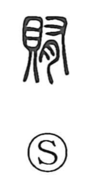

Explanation
賄 is a phono-semantic character: 貝, the shell-currency that signifies valuables and wealth, combines with the phonetic 有. Shirakawa reads 有 as a hand presenting sacrificial meat—an act of offering that also underlies the sense found in 侑—here contributing both sound and the nuance of proffering. In the Book of Odes (Wei Feng, “Meng”), the line 以爾車來 我賄以遷, ‘Come with your carriage and I will move with my goods,’ shows 賄 in its original sense of one’s own property or effects, a view echoed by the Shuowen’s gloss of “wealth, money” in one’s possession. From this core meaning, the character came to denote sending one’s goods or money to someone—a present—and, in certain contexts, a bribe. In Japanese usage, 賄う developed the practical sense ‘to provide or cover,’ as in 需要を賄う and 自前で賄う.